AnyPortrait > Getting Started > 2.4. Adding Bones
2.4. Adding Bones
1.0.0
It covers how to add a bone for a bone animation.
AnyPortrait supports Bone IK (Inverse Kinematics) and supports Bone Socket.
Details can be found on the relevant page (IK Guide, Socket Guide).
This page tells you how to add basic bones and how to set up for the next tutorial.
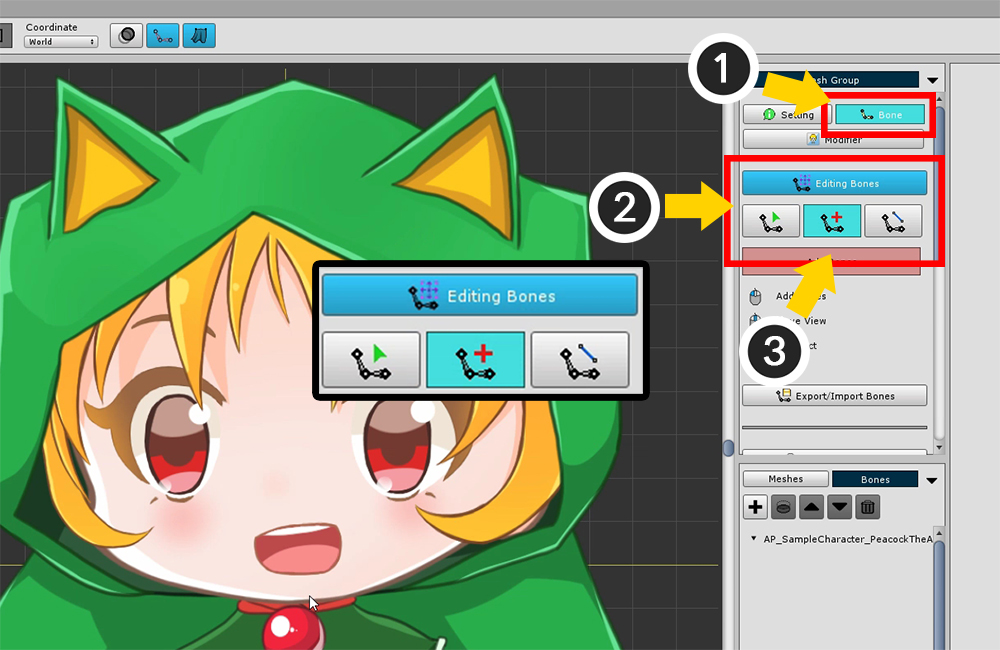
(1) Select the Bone menu.
(2) Press the Start Editing Bones button to activate the Bone editing mode.
(3) Select the Adding tool from the three Bone editing tools.

The above screen is the UI for the Bone edit mode.
1. Bone Editing Enable/Disable Button : Turns Bone Edit Mode on or off. You can only edit it while it is on.
2. Selection tool : Bone can be selected.
3. Adding tool : You can add bones. If there is a selected Bone, it is automatically registered as a Child Bone. If you uncheck it with the Right Click , and Right Click again , it switches to this selection tool.
4. Connecting tool : Connect two bones and connect them in Parent-Child relationship. The second selected bone becomes the Parent Bone. If you uncheck it with the Right Click , and Right Click again , it switches to this selection tool.
We will learn how to add bones and we will proceed with the next step.
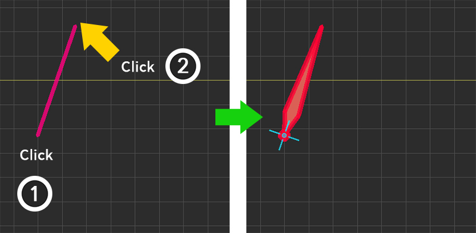
With Bone not selected, create a bone with (1) the first clicked position as the start point, and (2) the second clicked position as the end point.
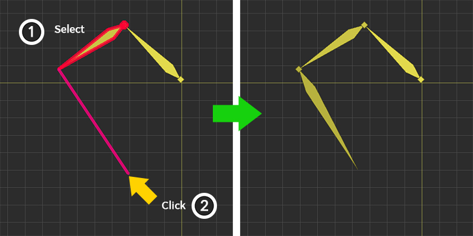
When Bone is selected, create a bone with (1) the end point of the selected bone as the start point and (2) the end point that is clicked.
At this time, the Name and Color of the newly created Bone will be set similar to the previously selected Bone, and the Shape will be the same.
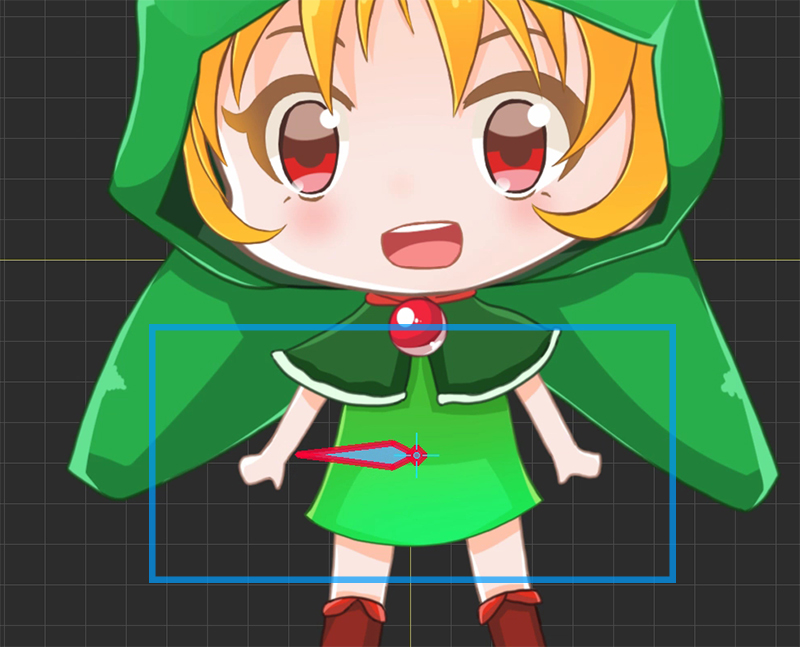
Add a bone to the pelvis, which is the center of your body.
The direction of the pelvic bone is not so important, so we made it easy to choose later in the future.
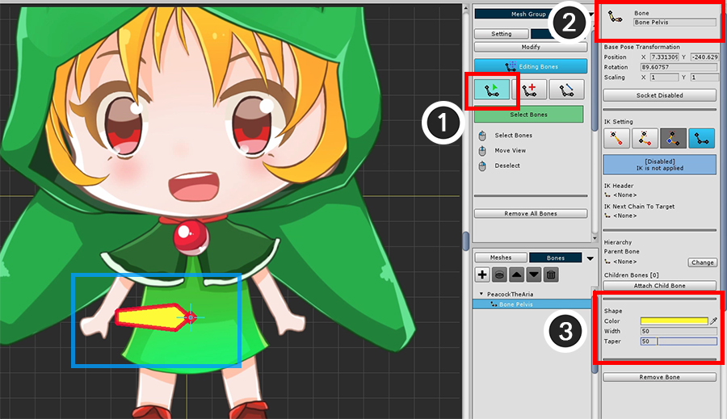
(1) Change to the Selection tool and select the bone you just created.
(2) Set the name of the selected Bone to "Bone Pelvis".
(3) Modify the color and shape of the bone.
For large bones, it is easy to select larger ones, so we recommend setting the size to make it easier to work on later.
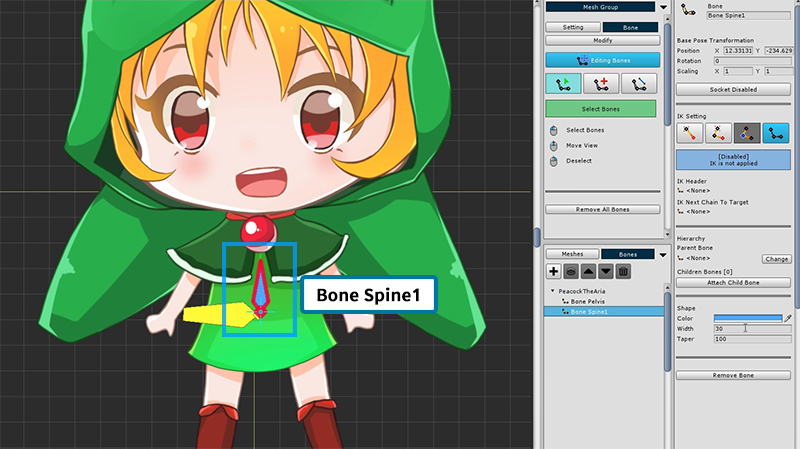
Now make bones of body.
First create a new bone and name it "Bone Spine1".
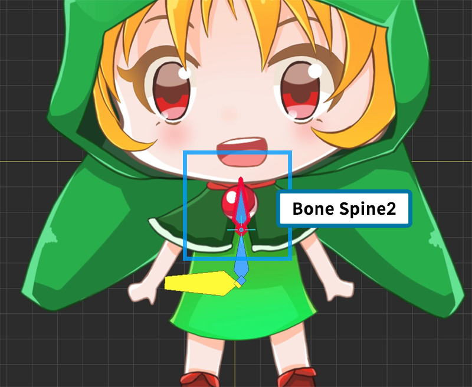
Create a second bone with "Bone Spine1" selected.
The name of the second bone is automatically named "Bone Spine2" and its size or color is set similar to the previous bone.
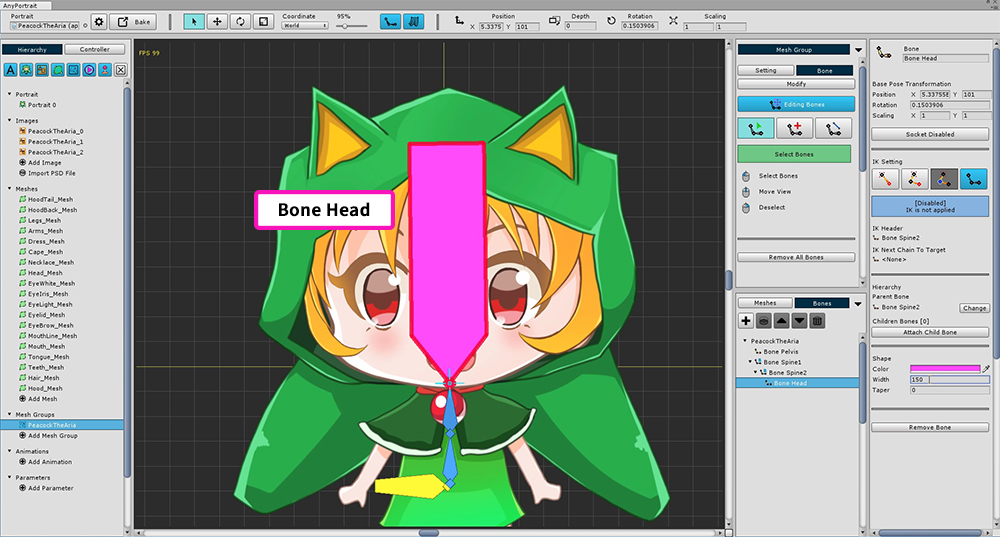
Add a head bone ("Bone Head").
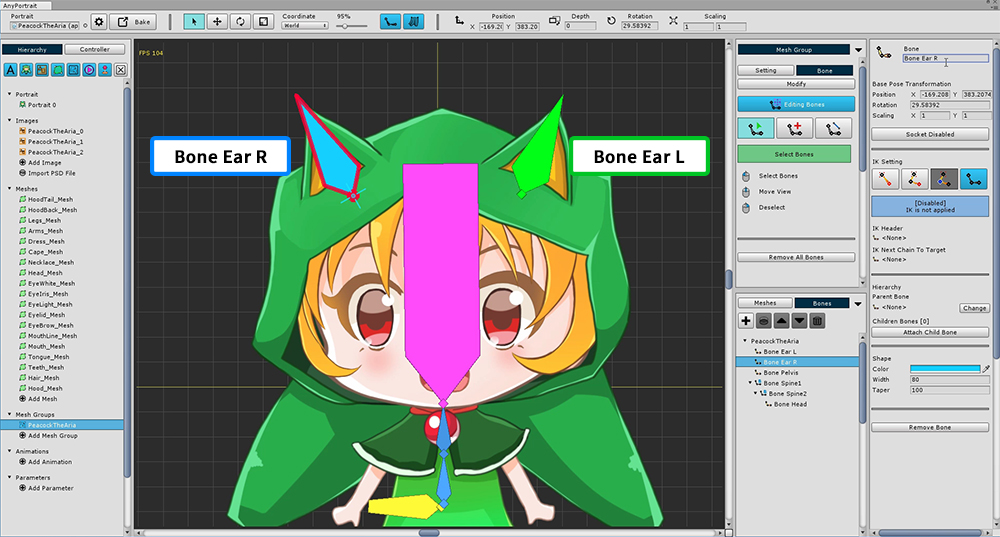
Also add a bone to the ear decor of the character hoodie.
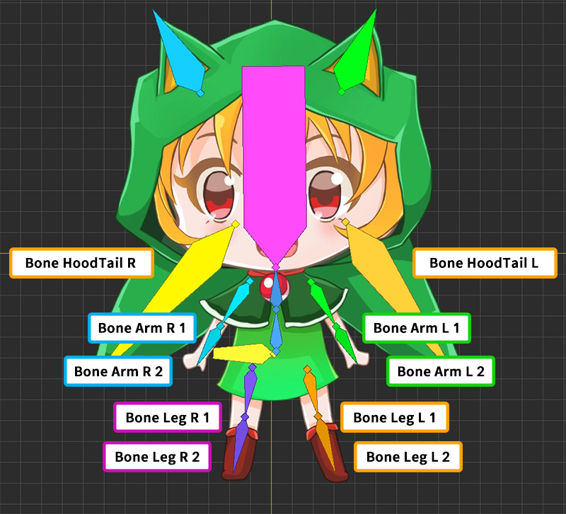
Set the bones as above.
Set various bones depending on which animation you are creating and which image you are targeting.
Now the next task is to connect the finished bones together.
If you connect the bone properly, you can move naturally like a real person.
It is common to first set the Pelvis to the parent bone (Root Parent Bone), and connect the head, hands, and feet to the ends.
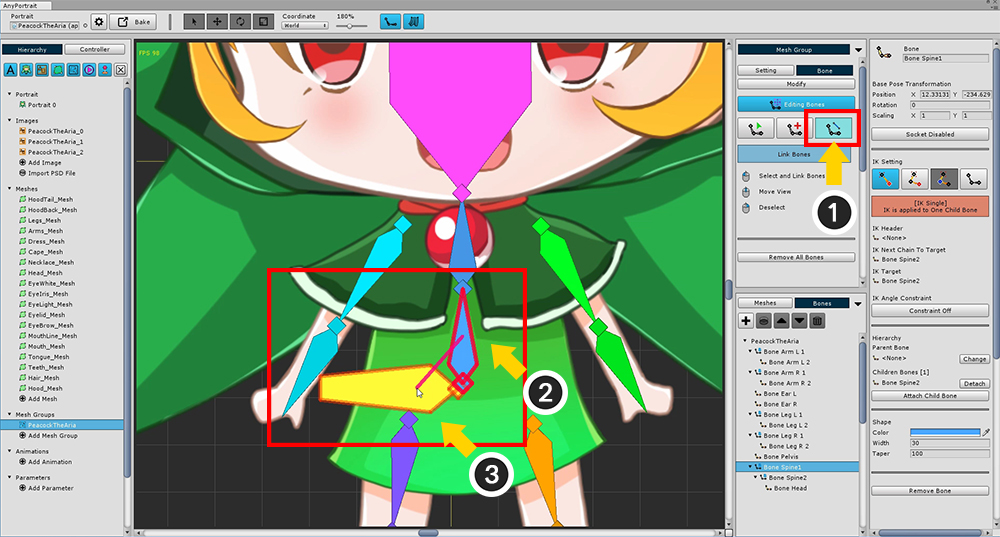
To connect the bones (1) Select the Connecting tool.
(2) Select body's starting bone ("Bone Spine 1"), and (3) select the pelvis ("Bone Pelvis").
In this way, the pelvis becomes the parent and the body becomes the child.
Right Click to deselect the next selection.
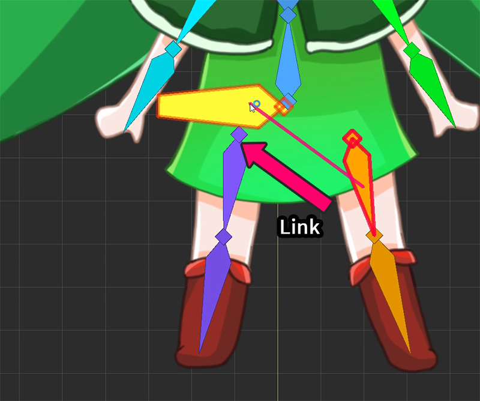
In the same way, Select legs and connect them to pelvis.
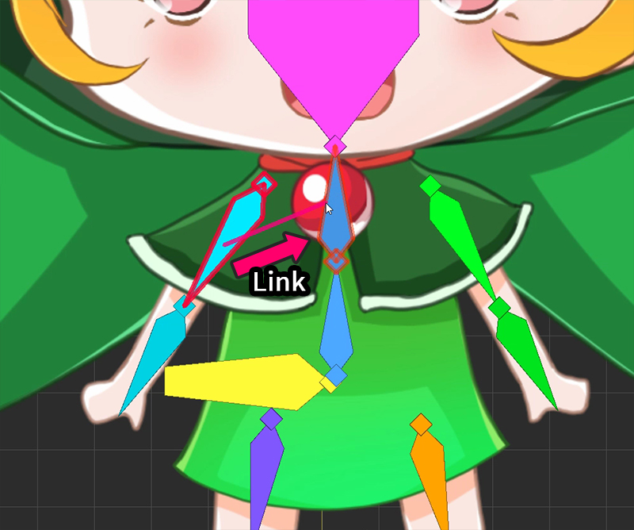
The head and both arms are connected to the uppermost bone ("Bone Spine2") of the body.
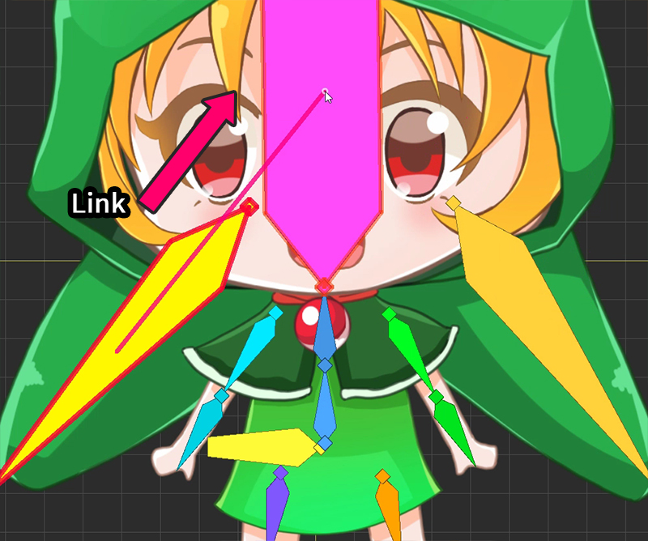
Attach the bones (hood ears and hood tails) of your head to the head ("Bone Head").

Hierarchy with completed bones.
You do not have to be like this, so think about the connection of the bones of the person and make it freely.
If the bones are not visible?
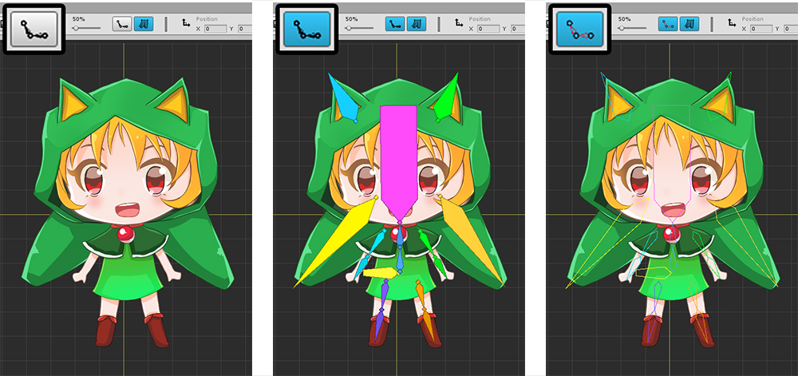
There are buttons to show or hide the bones at the top of the screen. This button has 3 states.
1. The bones are not visible when the button is off.
2. When the button is on, the bones appear filled in color.
3. When the button is on but the hollow icon is on, the bones appear only as lines.
Note : This page provides a rough overview of bone settings.
The configuration of this setting screen is as follows.
Please refer to Related Page.
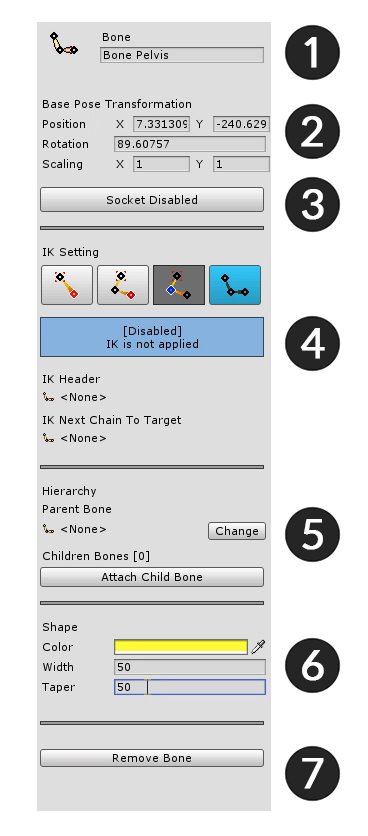
1. Name : Sets the name of the bone.
2. Base Pose Transformation : Position, rotation, size value of bone.
3. Socket : To refer to the bone after bake, turn on the socket.
4. IK Setting : This is the area to set the IK function of the bone.
5. Hierarchy : You can select parent bone, child bone here.
6. Shape : Set color and shape. The larger the taper, the tapered tip.
7. Remove Remove Bone : Delete the bone. You can also delete all children by selecting the dialog box.
Color presets and "Needle shape" bones
1.2.3
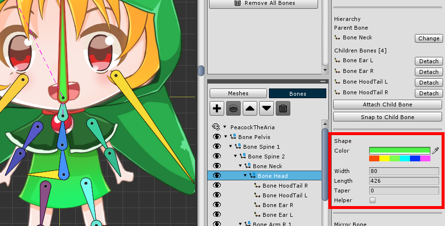
You can quickly change the color of the bones using the "Color Preset" feature added in v1.2.3.
If you click the 6 color buttons, it will change to the color of the corresponding color series.
Each time the button is pressed, a different color is assigned.
Since the range of colors from the preset is moderately wide, it is easy to make the colors of the bones of the same series similar.
As of v1.2.3, you can change the settings to the bones of "Arrowhead shape" and "Needle shape". (Related page)
If “Needle Shape” is selected, Width and Taper settings are not applied.